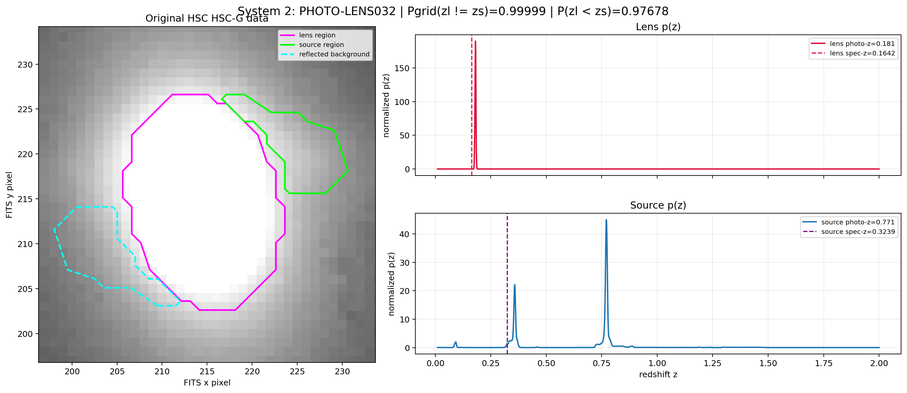
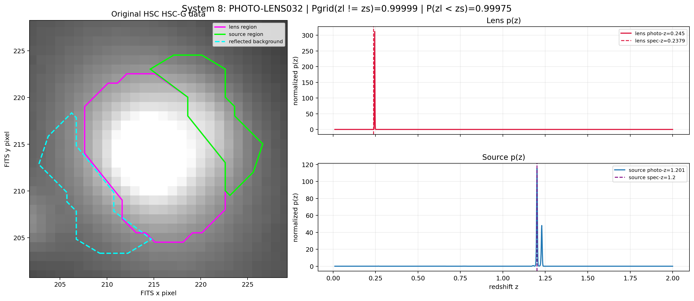
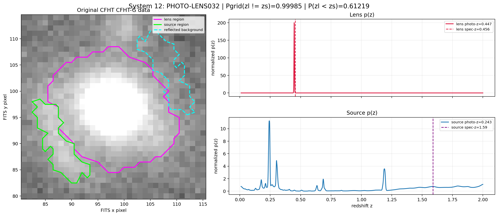
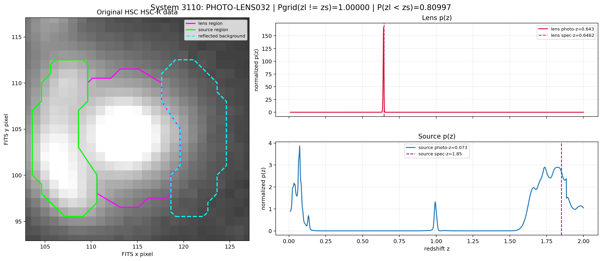
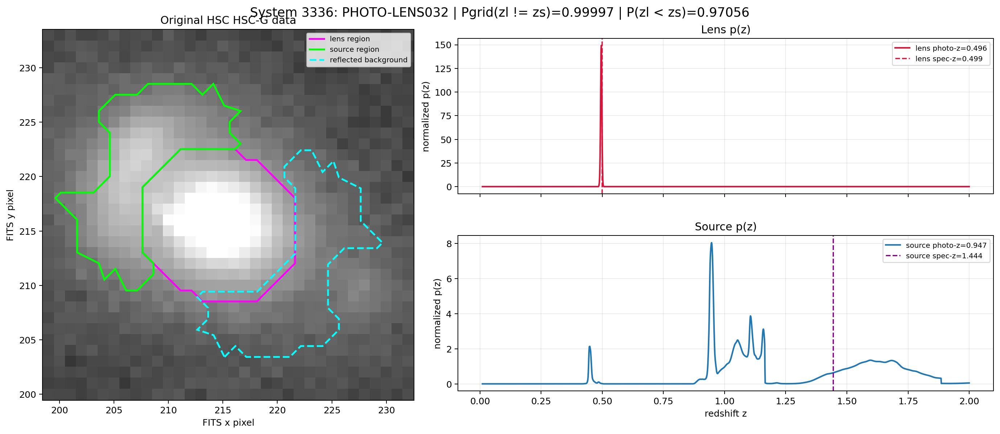
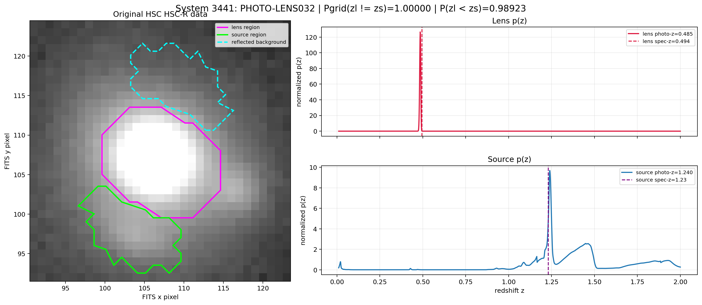
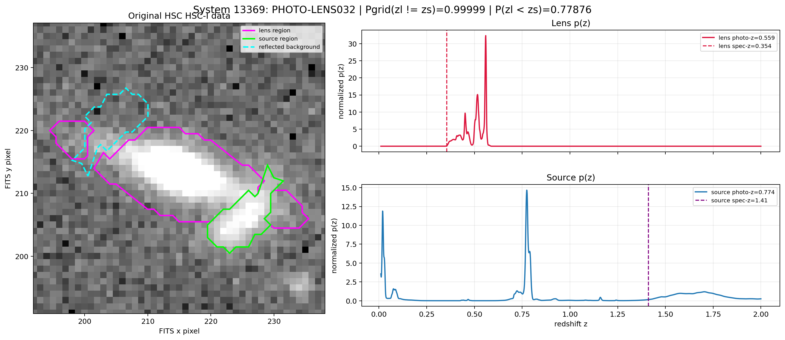
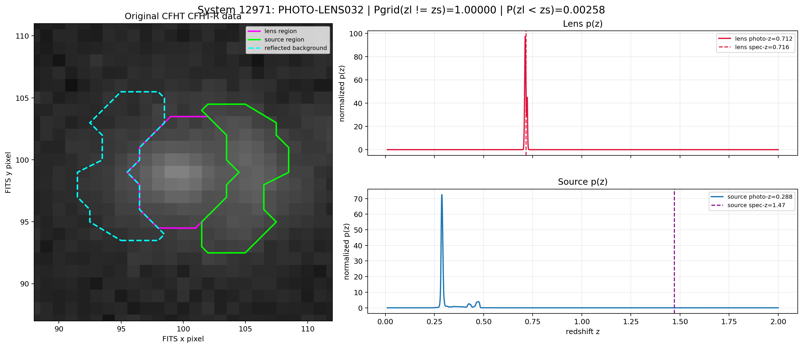
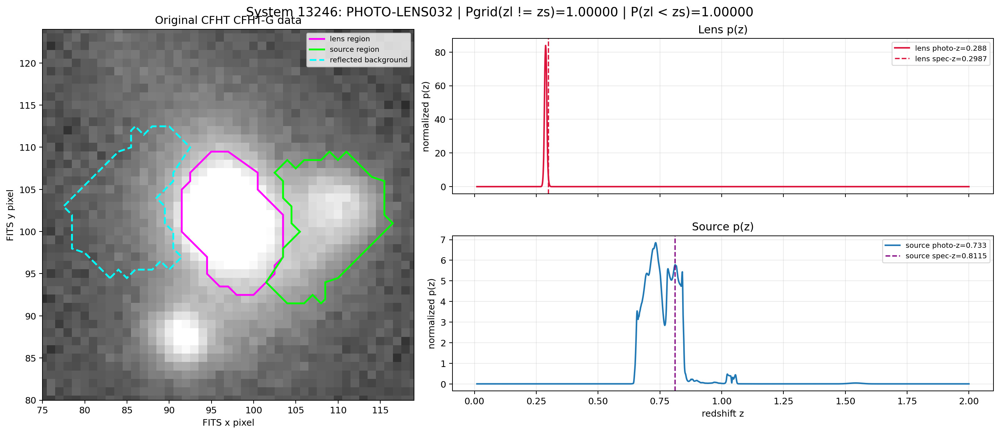

PHOTO-LENS032：稳定版 HSC + CFHT photo-z 结果
所有系统使用正确的 AutoLens lens-light-subtracted source detection image，固定
DETECT_THRESH=4.0σ、hysteresis growth ratio=0.75。HSC 使用
PAUS NB + 官方 HSC-G + HSC r/i/z/y；CFHT 使用 PAUS NB + CFHT u/g/r/i/z。所有结果均为 wNB1。
032 相对 031 的唯一变化：系统 3110 在 lens/source BCNz 拟合中同时排除 NB535；
其余系统、选区和测光保持不变，且没有重新进行透镜建模。
P(zl≠zs) 定义：连续变量严格不相等的概率恒为1，因此这里报告离散BCNz网格定义
1-sum_i q_l(i)q_s(i)，它依赖网格分辨率。透镜验证应主要参考积分排序概率
P(zl<zs)。
下载机器可读汇总CSV · 版本说明
| system | survey | modeling BB | zl photo-z |
zs photo-z | Pgrid(zl≠zs) | P(zl<zs) | effective NB |
|---|
| 2 | HSC | HSC-G | 0.181 | 0.771 | 0.99999 | 0.97678 | 26 |
| 8 | HSC | HSC-G | 0.245 | 1.201 | 0.99999 | 0.99975 | 40 |
| 12 | CFHT | CFHT-G | 0.447 | 0.243 | 0.99985 | 0.61219 | 40 |
| 3110 | HSC | HSC-R | 0.643 | 0.073 | 1.00000 | 0.80997 | 39 |
| 3336 | HSC | HSC-G | 0.496 | 0.947 | 0.99997 | 0.97056 | 40 |
| 3441 | HSC | HSC-R | 0.485 | 1.240 | 1.00000 | 0.98923 | 40 |
| 13369 | HSC | HSC-I | 0.559 | 0.774 | 0.99999 | 0.77876 | 40 |
| 12971 | CFHT | CFHT-R | 0.712 | 0.288 | 1.00000 | 0.00258 | 40 |
| 13246 | CFHT | CFHT-G | 0.288 | 0.733 | 1.00000 | 1.00000 | 27 |
System 2 — HSC (HSC-G)
zl,phot=0.181; zs,phot=0.771; Pgrid(zl≠zs)=0.99999; P(zl<zs)=0.97678; spec-z lens/source=0.1642/0.3239
Effective NB (26): NB455, NB465, NB475, NB485, NB535, NB545, NB555, NB565, NB655, NB665, NB675, NB685, NB715, NB725, NB735, NB745, NB755, NB765, NB775, NB785, NB795, NB805, NB815, NB825, NB835, NB845

System 8 — HSC (HSC-G)
zl,phot=0.245; zs,phot=1.201; Pgrid(zl≠zs)=0.99999; P(zl<zs)=0.99975; spec-z lens/source=0.2379/1.2000
Effective NB (40): NB455, NB465, NB475, NB485, NB495, NB505, NB515, NB525, NB535, NB545, NB555, NB565, NB575, NB585, NB595, NB605, NB615, NB625, NB635, NB645, NB655, NB665, NB675, NB685, NB695, NB705, NB715, NB725, NB735, NB745, NB755, NB765, NB775, NB785, NB795, NB805, NB815, NB825, NB835, NB845

System 12 — CFHT (CFHT-G)
zl,phot=0.447; zs,phot=0.243; Pgrid(zl≠zs)=0.99985; P(zl<zs)=0.61219; spec-z lens/source=0.4560/1.5900
Effective NB (40): NB455, NB465, NB475, NB485, NB495, NB505, NB515, NB525, NB535, NB545, NB555, NB565, NB575, NB585, NB595, NB605, NB615, NB625, NB635, NB645, NB655, NB665, NB675, NB685, NB695, NB705, NB715, NB725, NB735, NB745, NB755, NB765, NB775, NB785, NB795, NB805, NB815, NB825, NB835, NB845

System 3110 — HSC (HSC-R)
zl,phot=0.643; zs,phot=0.073; Pgrid(zl≠zs)=1.00000; P(zl<zs)=0.80997; spec-z lens/source=0.6462/1.8500
Effective NB (39): NB455, NB465, NB475, NB485, NB495, NB505, NB515, NB525, NB545, NB555, NB565, NB575, NB585, NB595, NB605, NB615, NB625, NB635, NB645, NB655, NB665, NB675, NB685, NB695, NB705, NB715, NB725, NB735, NB745, NB755, NB765, NB775, NB785, NB795, NB805, NB815, NB825, NB835, NB845

System 3336 — HSC (HSC-G)
zl,phot=0.496; zs,phot=0.947; Pgrid(zl≠zs)=0.99997; P(zl<zs)=0.97056; spec-z lens/source=0.4990/1.4440
Effective NB (40): NB455, NB465, NB475, NB485, NB495, NB505, NB515, NB525, NB535, NB545, NB555, NB565, NB575, NB585, NB595, NB605, NB615, NB625, NB635, NB645, NB655, NB665, NB675, NB685, NB695, NB705, NB715, NB725, NB735, NB745, NB755, NB765, NB775, NB785, NB795, NB805, NB815, NB825, NB835, NB845

System 3441 — HSC (HSC-R)
zl,phot=0.485; zs,phot=1.240; Pgrid(zl≠zs)=1.00000; P(zl<zs)=0.98923; spec-z lens/source=0.4940/1.2300
Effective NB (40): NB455, NB465, NB475, NB485, NB495, NB505, NB515, NB525, NB535, NB545, NB555, NB565, NB575, NB585, NB595, NB605, NB615, NB625, NB635, NB645, NB655, NB665, NB675, NB685, NB695, NB705, NB715, NB725, NB735, NB745, NB755, NB765, NB775, NB785, NB795, NB805, NB815, NB825, NB835, NB845

System 13369 — HSC (HSC-I)
zl,phot=0.559; zs,phot=0.774; Pgrid(zl≠zs)=0.99999; P(zl<zs)=0.77876; spec-z lens/source=0.3540/1.4100
Effective NB (40): NB455, NB465, NB475, NB485, NB495, NB505, NB515, NB525, NB535, NB545, NB555, NB565, NB575, NB585, NB595, NB605, NB615, NB625, NB635, NB645, NB655, NB665, NB675, NB685, NB695, NB705, NB715, NB725, NB735, NB745, NB755, NB765, NB775, NB785, NB795, NB805, NB815, NB825, NB835, NB845

System 12971 — CFHT (CFHT-R)
zl,phot=0.712; zs,phot=0.288; Pgrid(zl≠zs)=1.00000; P(zl<zs)=0.00258; spec-z lens/source=0.7160/1.4700
Effective NB (40): NB455, NB465, NB475, NB485, NB495, NB505, NB515, NB525, NB535, NB545, NB555, NB565, NB575, NB585, NB595, NB605, NB615, NB625, NB635, NB645, NB655, NB665, NB675, NB685, NB695, NB705, NB715, NB725, NB735, NB745, NB755, NB765, NB775, NB785, NB795, NB805, NB815, NB825, NB835, NB845

System 13246 — CFHT (CFHT-G)
zl,phot=0.288; zs,phot=0.733; Pgrid(zl≠zs)=1.00000; P(zl<zs)=1.00000; spec-z lens/source=0.2987/0.8115
Effective NB (27): NB475, NB485, NB495, NB505, NB515, NB525, NB565, NB575, NB585, NB595, NB605, NB615, NB625, NB635, NB645, NB655, NB695, NB705, NB715, NB725, NB735, NB745, NB775, NB785, NB795, NB805, NB815
